TradingAgents가 뭐고, 무엇이 바뀌었나요
TradingAgents는 Tauric Research가 공개한 오픈소스 프레임워크예요. AI(Artificial Intelligence) 에이전트 여러 개가 증권사 리서치 조직처럼 역할을 나눠 한 종목을 분석하고, 마지막에 사고팔지 결정을 내려요. 발표자는 이걸 'Claude나 ChatGPT를 내 헤지펀드로 바꾸는 도구'라고 소개해요.
아래 화면은 레포 첫 페이지예요. 가운데 '#1 Repository Of The Day' 배지가 깃허브 트렌딩 1위에 올랐다는 표시이고, 그 아래 News 목록이 최근 릴리스에서 바뀐 점이에요. 맨 위 v0.7.0 줄에 'ChatGPT Plus or Pro plan으로 실행', v0.6.0 줄에 'HTML 한 장으로 저장', v0.5.2 줄에 '애널리스트 병렬 실행'이 보여요.
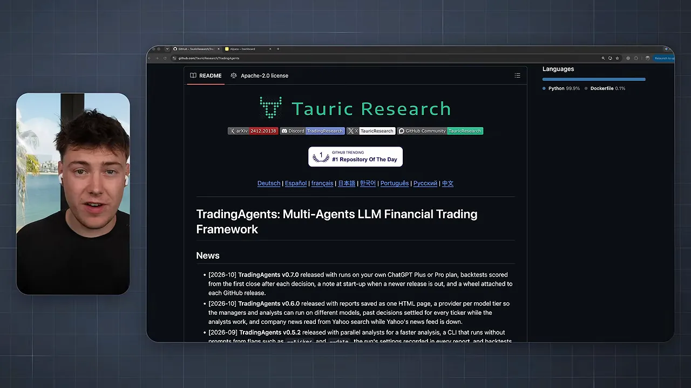
발표자가 꼽은 변화를 표로 정리하면 이래요.
| 바뀐 점 | 무엇이 좋아졌나요 |
|---|---|
| ChatGPT 구독으로 실행 | API(Application Programming Interface) 요금을 따로 내지 않아도 돼요 |
| 보고서를 HTML(HyperText Markup Language) 한 장으로 저장 | 휴대폰에서도 분석 결과를 바로 읽어요 |
| 에이전트 동시 실행 | 하나가 끝나길 기다리는 줄이 사라져 훨씬 빨라졌어요 |
| 더 공정한 백테스트, 제공사 추가 | 작은 변화로 함께 언급해요 |
| 포트폴리오 연결 | 내 보유 종목을 실시간으로 분석해요 |
발표자는 마지막 항목 덕분에 이 레포가 지금 나와 있는 'AI 재무 상담' 레포 중 가장 낫다고 평가해요. 본인도 AI로 운용하는 포트폴리오에 이 레포를 쓰고 있다고 해요.
설치하고 모델 고르기
설치는 어렵지 않아요. 깃허브의 설치 안내를 복사해 Claude나 GPT(Generative Pre-trained Transformer) 같은 코딩 도구에 붙여 넣으면 알아서 깔아 줘요. 발표자는 TradingAgents 자체 터미널 화면 대신 평소 쓰는 Claude Code 안에서 돌려요. 그래야 자기 대시보드를 고치거나 데이터를 끌어다 쓰기 쉽기 때문이에요.
아래는 README에 실린 자체 CLI(Command-Line Interface) 화면이에요. 가운데 박스에 I. Analyst Team → II. Research Team → III. Trader → IV. Risk Management → V. Portfolio Management 순서가 적혀 있고, 그 아래 Step 1에서 분석할 종목 코드를 입력받아요.
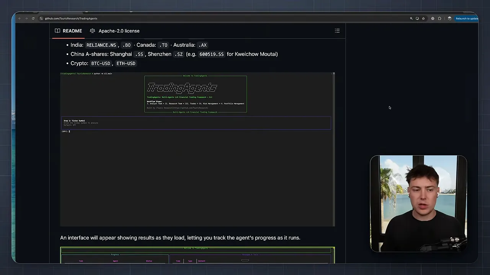
Claude냐 GPT냐
모델을 붙이는 길은 두 가지예요. Claude는 아직 구독으로는 안 되고 API 키가 있어야 해요. GPT는 ChatGPT 구독으로 돌릴 수 있어요. 아래 README 화면 위쪽이 제공사별 API 키 목록이고, 아래 문단이 'ChatGPT Plus나 Pro 플랜으로 돌리려면 CLI 메뉴에서 Subscription을 고르라'는 안내예요.
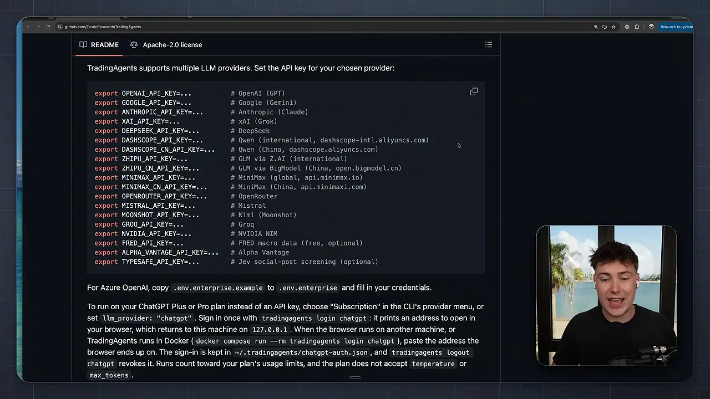
| Claude | GPT | |
|---|---|---|
| 연결 방법 | API 키 필요 | ChatGPT 구독으로 가능 |
| 비용 | 쓰는 만큼 API 요금 | 구독 사용량에서 차감, 대체로 더 싸요 |
| 발표자 선택 | Opus 5.5 (평소 작업이 Claude 중심이라서) | 비용을 아끼려면 이쪽을 권해요 |
발표자는 두 모델 모두 이 일에 충분히 좋고, 데이터 소스가 같아서 결과 차이를 크게 못 느꼈다고 해요. 다만 매일 반복 실행처럼 자주 돌리면 비용이 꽤 나와요. 대부분의 AI 구독은 실제 사용량보다 싸게 책정돼 있어서 구독 쪽이 결국 저렴할 거라고 봐요.
Sonnet이냐 Opus냐
Claude를 고르면 Sonnet과 Opus 중 고르게 돼요. 발표자는 Sonnet이 싸지만 돈이 걸린 판단은 가장 똑똑한 모델에 맡기고 싶어서 Opus를 써요. 아래는 연결 확인을 시킨 장면이에요. 아래쪽 'Model mismatch' 문단을 보면 레포 설정 파일에 옛 모델인 Fable 5와 Sonnet 5가 적혀 있다고 알려 줘요.
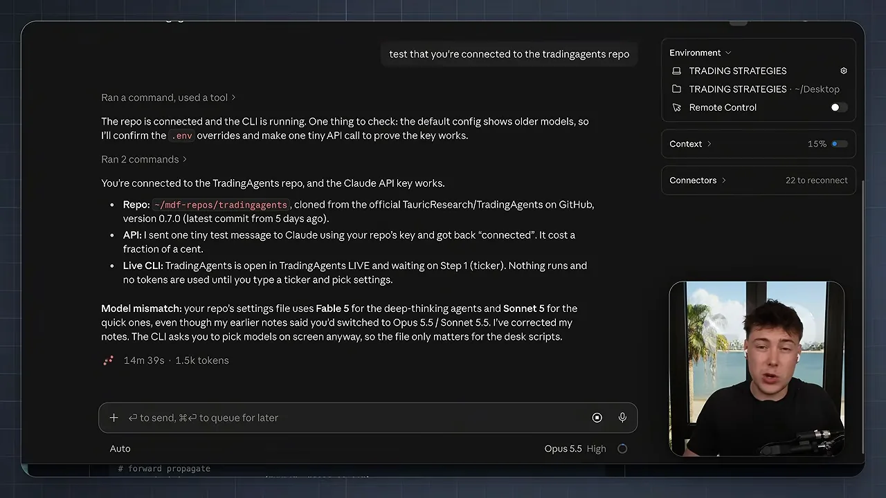
그래서 바로 다음 장면에서 .env의 깊은 추론용 모델을 claude-opus-5-5, 빠른 작업용 모델을 claude-sonnet-5-5로 바꾸라고 지시해요. 화면 아래 오른쪽 말풍선이 그 지시예요.
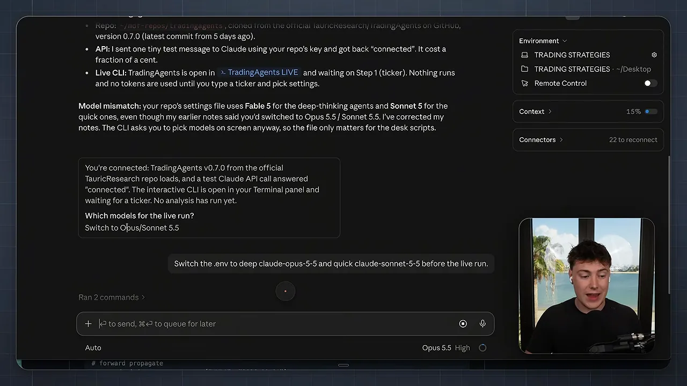
그냥 Claude에 물어보면 안 되나요? 에이전트 팀이 일하는 방식
발표자는 먼저 '그냥 Claude한테 투자 조언을 물어보면 되지 않나'라는 질문에 답해요. 답은 '아니요'예요. 아래 레포 화면 오른쪽에 별 112.4k가 보이고, 커밋은 493개가 쌓여 있어요. 영상에서는 기여자 24명, 릴리스 14개라고 말해요.
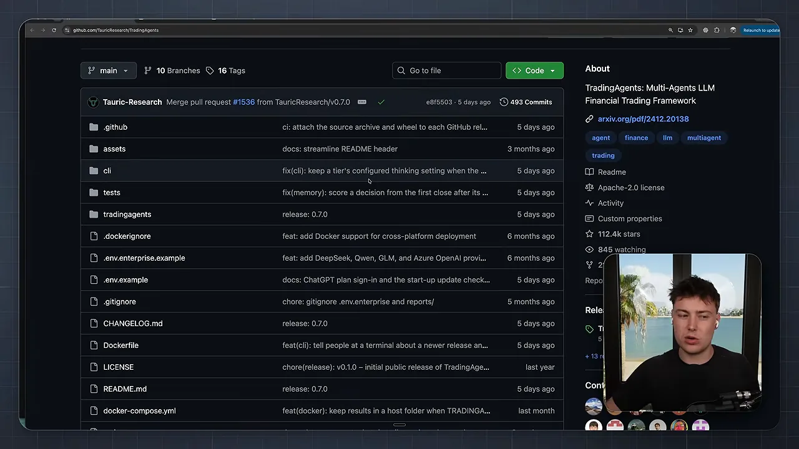
발표자가 드는 차이는 두 가지예요.
- 생각하는 법이 정해져 있어요. 어떤 데이터를 보고, 어떤 틀로 판단할지를 수많은 시간을 들여 다듬어 놨어요. 채팅창의 Claude에게는 아무도 그걸 알려 주지 않았어요.
- 실제 데이터에 붙어 있어요. 실시간 시세, 과거 데이터, 옛 실적 보고서까지 볼 수 있어요. 채팅창만으로는 얻기 어려운 것들이에요.
오픈소스라는 점도 장점이에요. 주식이든 암호화폐든 내가 분석하는 방식이 있다면, 에이전트가 읽는 마크다운 파일을 고쳐 나만의 분석 절차를 만들 수 있어요.
에이전트 팀의 전체 흐름
아래가 README의 구조도예요. 왼쪽 노란 칸 네 줄이 데이터(시장, 소셜 미디어, 뉴스, 펀더멘털)이고, 가운데 주황 칸이 강세(Bullish)와 약세(Bearish) 연구원의 토론이에요. 오른쪽으로 가면 트레이더, 리스크 관리 팀(공격적·중립·보수적), 매니저, 실행(Execution) 순서예요.
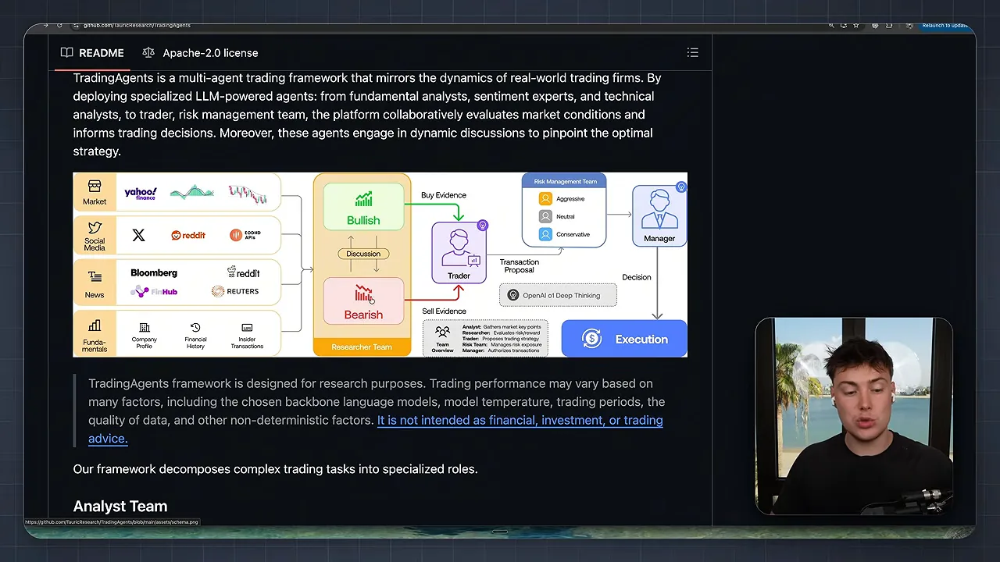
애널리스트 팀은 네 명이에요. 아래 화면의 글머리표가 각자 맡은 일이에요. 그 아래 문단에는 '선택한 애널리스트는 동시에 일하고, 모든 보고서가 모이면 연구 토론이 시작된다'고 적혀 있어요.
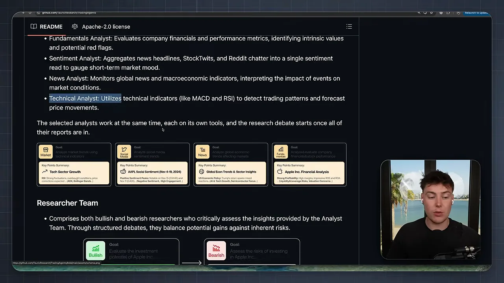
| 애널리스트 | 보는 것 |
|---|---|
| 펀더멘털 | 재무제표와 실적 지표, 내재가치와 위험 신호 |
| 심리 | 뉴스 헤드라인, StockTwits, 레딧 글로 읽는 단기 분위기 |
| 뉴스 | 세계 뉴스와 거시 경제 지표가 시장에 주는 영향 |
| 기술적 분석 | MACD, RSI 같은 지표로 본 가격 패턴 |
보고서는 연구원 팀으로 넘어가요. 아래 화면 위쪽이 강세 연구원과 약세 연구원 카드이고, 둘 사이 'Debate' 화살표가 서로 반박을 주고받는다는 뜻이에요. 아래쪽 Trader Agent는 두 팀 보고서를 묶어 매매 시점과 규모를 정해요.
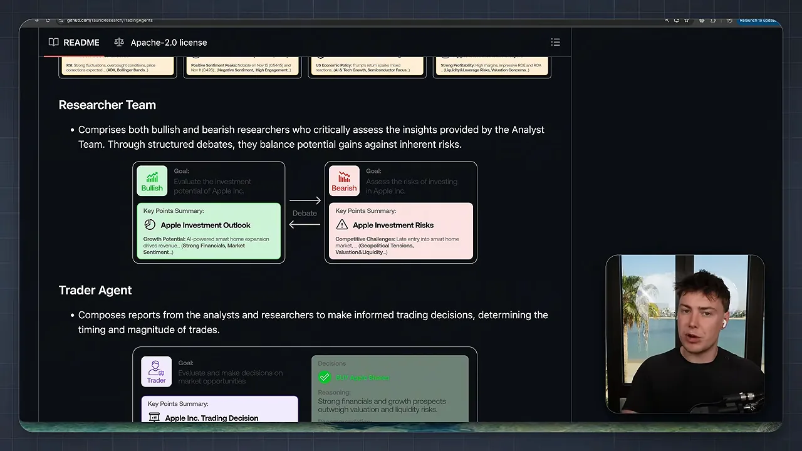
발표자는 재미로 투자자 페르소나가 담긴 다른 레포를 붙여, 워런 버핏과 레이 달리오가 서로 논쟁하게 만든 적도 있다고 해요. 기본 설정만으로도 관점은 충분히 괜찮다고 덧붙여요.
마지막은 리스크 관리와 포트폴리오 매니저예요. 아래 화면 왼쪽 카드 세 장이 Risky·Neutral·Safe 세 관점이고, 이들의 보고서가 오른쪽 Manager로 가요. 매니저가 거래안을 승인하면 주문이 실행으로 넘어가요.
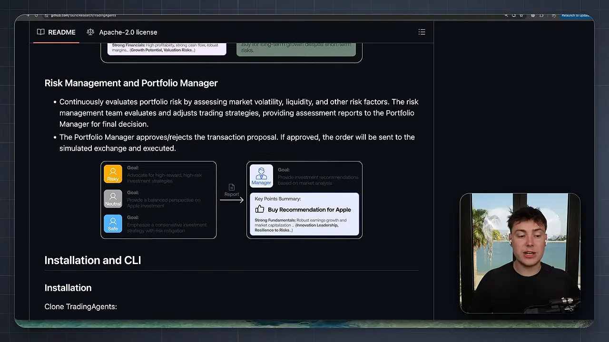
발표자는 리스크 팀이 뉴스로 금리 결정 같은 거시 이벤트도 확인한다는 점, 그리고 내 포트폴리오를 연결하면 전체 위험 성향에 맞춰 판단한다는 점을 그냥 채팅과의 차이로 꼽아요. 그리고 처음에는 마지막 매니저 역할을 사람이 직접 맡으라고 권해요. 보고서를 읽고, 스스로 따져 본 뒤 실행할지 정하는 거예요. 경험이 쌓이면 그때 이 단계까지 자동화해도 된다고 해요.
엔비디아로 돌려 본 보고서
이제 실제로 돌려 봐요. 대상은 엔비디아 한 종목이에요. 아래 화면 아래쪽 말풍선이 발표자가 넣은 지시예요. 애널리스트 4명을 모두 써서 2026-10-20 종가 기준으로 분석하고, 보고서를 HTML로 저장하고, 강세·약세 연구원이 어디서 갈렸는지 쉬운 말로 설명해 달라고 해요.
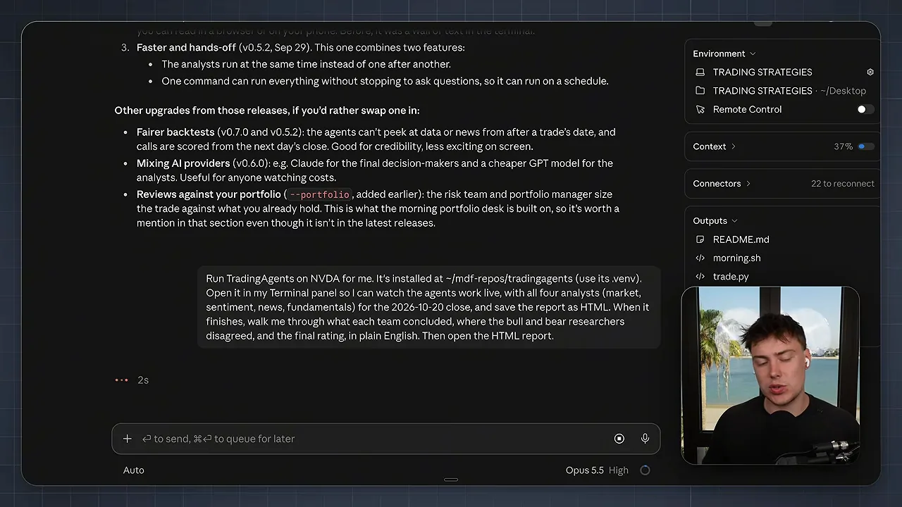
엔비디아 말고도 비트코인, 금, 여러 종목 묶음에 똑같이 쓸 수 있어요. 발표자는 '반도체 상위 50개 중 가장 좋은 기회 세 개를 골라 줘' 같은 업종 단위 지시도 예로 들어요. 종목이 늘수록 토큰을 많이 쓰지만 흐름은 같아요. 영상용으로 Opus 5.5의 추론 수준을 high로 뒀는데, 평소엔 medium이 더 빠르고 토큰도 아껴서 균형이 나을 거라고 해요.
실행 화면은 아래처럼 생겼어요. 왼쪽 위 Progress 표에서 애널리스트 팀의 Market, Sentiment, News가 completed로 바뀌고, 아래 Current Report 칸에 펀더멘털 분석이 채워지는 중이에요. 맨 아래 줄 'Agents: 4/12'는 에이전트 12개 중 4개가 끝났다는 뜻이에요.
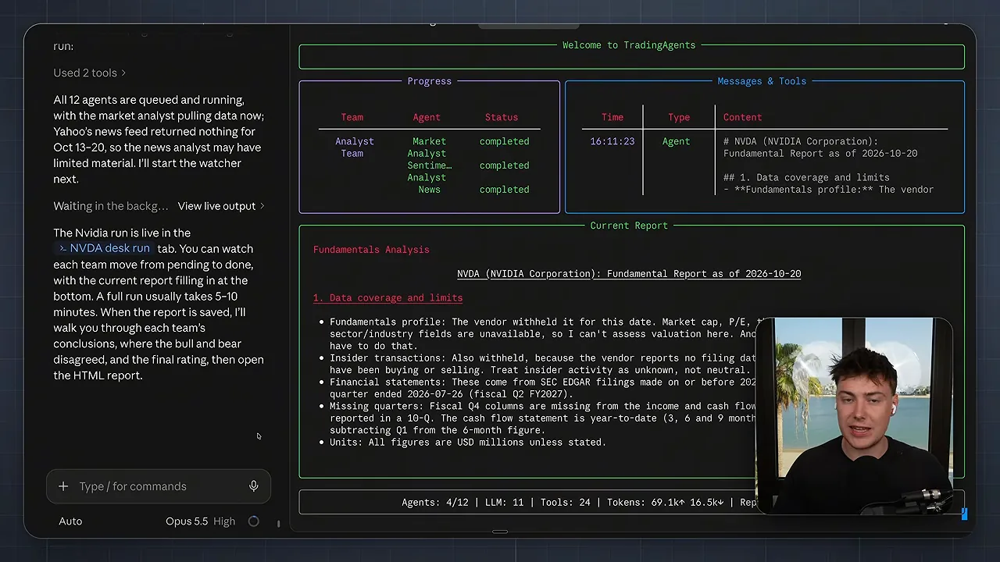
보고서 읽기: 애널리스트에서 연구원 토론까지
완성된 보고서는 브라우저에서 열려요. 아래는 첫 장인 시장 애널리스트 부분이에요. 엔비디아가 216.47달러로 마감했고, 10일 EMA(Exponential Moving Average)와 50일 SMA(Simple Moving Average)보다 아래, 200일 SMA보다는 위라는 요약이 보여요. 이동평균선 여러 개를 겹쳐 보고 단기와 장기 흐름을 나눠 읽는 방식이에요. 그 아래에 고른 지표 여덟 개와 고른 이유가 이어져요.
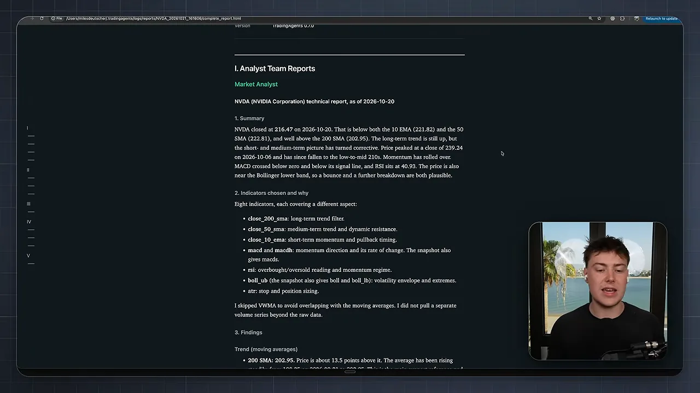
발표자가 가장 좋아하는 부분은 강세·약세 연구원의 맞대결이에요. 강세 쪽은 탄탄한 매출, 좋은 마진, 이익 창출력, 재무 상태, 경쟁 우위, 차트를 근거로 들어요. 아래 화면은 약세 쪽 반론이에요. 파랗게 칠한 문장이 핵심이에요.
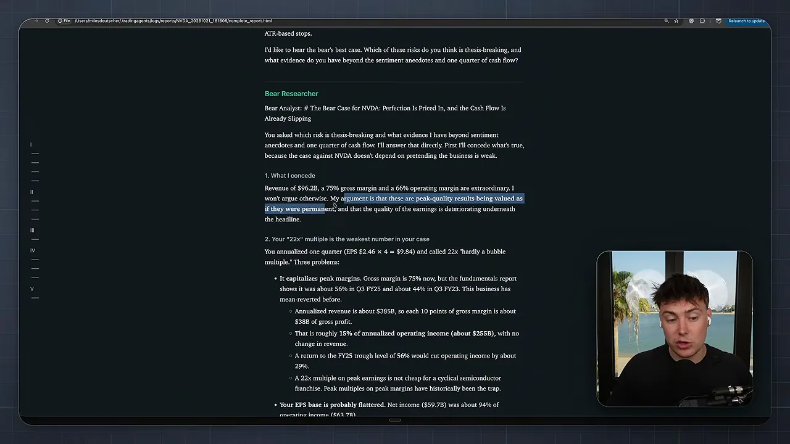
My argument is that these are peak quality results being valued as if they were permanent.
제 주장은, 이건 정점의 실적인데 시장이 그걸 영원할 것처럼 값을 매기고 있다는 거예요.
— 보고서 속 약세 연구원, 영상 10:23
발표자는 이 분석이 '대충 만든 AI 글'이 아니라 깊이 있게 짜여 있다고 평가해요. 채팅창에 그냥 물어본 답보다 훨씬 낫다는 거예요.
결론: 비중 확대
연구 매니저는 토론을 보고 '비중 확대'를 권했어요. 강세 논리가 더 강하지만 전부 살 정도는 아니고, 약세 쪽 지적은 방향을 바꿀 이유가 아니라 천천히 들어갈 이유라는 판단이에요. 트레이더는 이걸 받아 '매수'를 냈어요.
'비중 확대'는 팔라는 말처럼 들려 헷갈리기 쉬워요. 발표자가 Claude에게 따로 물어본 답이 아래 화면이에요. 위쪽 굵은 줄에 다섯 단계 등급이, 가운데 'Why the trader said Buy' 문단에 트레이더가 왜 매수라고 했는지가 적혀 있어요.
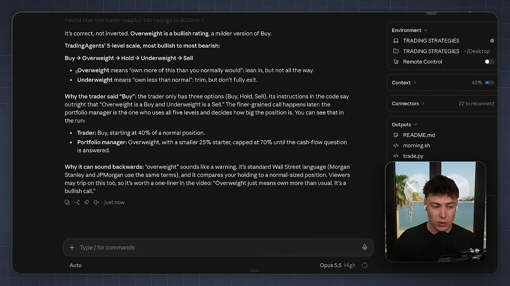
화면 내용을 그림으로 옮기면 이래요. 다섯 단계 등급은 포트폴리오 매니저가 쓰고, 트레이더는 매수·보유·매도 세 가지만 써요. 그래서 비중 확대는 트레이더 손에서 매수가 되고, 비중 축소는 매도가 돼요.
숫자로 본 매매 계획
트레이더 계획에는 구체적인 숫자가 붙어 있어요. 아래 화면 가운데 'Entry Price: 216.5', 'Stop Loss: 199.0'이 보이고, 들어갈 가격은 216.5달러, 손절가는 199달러예요. 그 아래 Position Sizing 문단이 얼마씩 나눠 살지를 적어요.
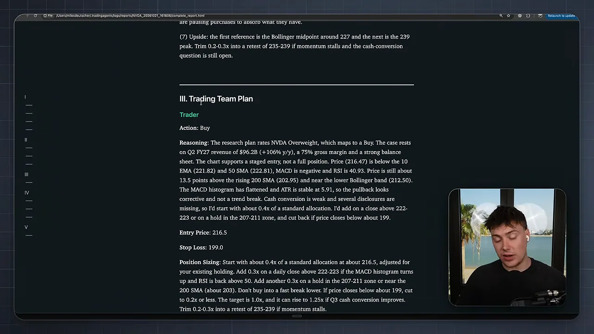
보고서 마지막의 포트폴리오 매니저는 같은 방향을 유지하면서 더 조심스럽게 고쳐요. 아래 화면 Executive Summary 첫 문장이 '트레이더의 0.4배 계획보다 더 천천히, 더 조심스럽게'예요. 시작을 0.25배로 낮추고, 상한을 0.7배로 묶고, 보유 기간을 다음 실적 발표까지 1~3개월로 잡아요.
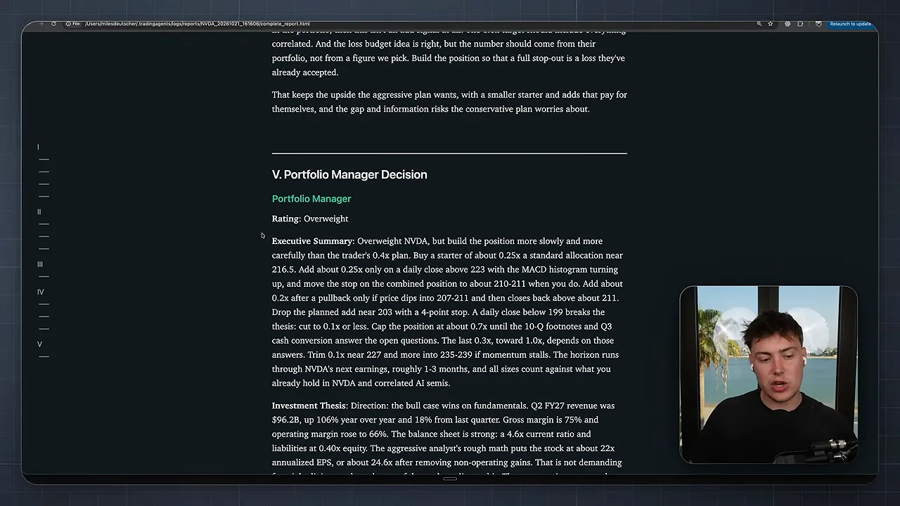
두 계획의 가격대를 한 축에 놓으면 아래와 같아요. 숫자는 모두 위 두 화면에 적힌 값이에요. 배수는 '표준 비중의 몇 배'를 뜻해요.
발표자는 여기서 한 가지를 짚어요. 이 판단은 내 계좌에 돈이 하나도 없다고 가정하고 낸 결론이에요. 이미 엔비디아를 갖고 있다면 해야 할 행동이 달라져요. 그래서 다음 단계가 포트폴리오 연결이에요.
내 포트폴리오에 연결하고 매일 점검하기
발표자는 가상 포트폴리오를 하나 만들고 대시보드 화면까지 붙였어요. 모든 사람에게 권하는 방식이라고 해요. 증권사가 여러 곳이면 구글 시트로 모으고, 한 곳이면 더 간단하고, 아예 손으로 고치거나 주기적으로 갱신되는 마크다운 파일 하나로도 돼요. 그 데이터를 화면에 붙이면 시간에 따른 성과를 볼 수 있어요.
아래 화면 오른쪽이 그 대시보드예요. 위쪽 카드에 포트폴리오 가치 111,546달러, 시작 대비 +11.6%가 보이고, 가운데 그래프가 7월부터의 추이, 오른쪽 도넛이 자산 배분이에요. 아래 Holdings 표에는 S&P 500 ETF(Exchange-Traded Fund), 비트코인, 마이크로소프트, 금 ETF 등 10종목이 있어요.
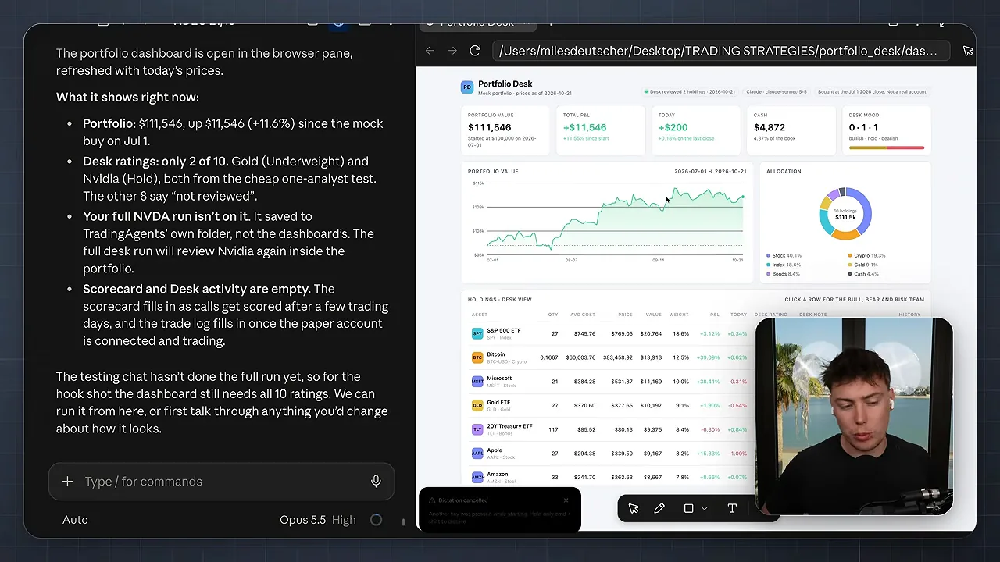
이 포트폴리오를 TradingAgents 분석과 맞물리면 종목마다 '데스크 등급'과 한 줄 메모가 붙어요. 이 시점엔 두 종목만 등급이 있었어요. 금은 비중 축소에 일부 정리를 권했고, 엔비디아는 지금 비중을 고려해 보유 의견이 나왔어요. 장기 상승 추세 속 눌림이지만 아직 매수 신호는 없다는 거예요.
그다음 발표자가 음성으로 지시를 넣어요. 아래 화면 왼쪽 말풍선이 그 내용이에요. 최근 엔비디아 분석까지 포함해 포트폴리오 전체를 검토하고, 종목마다 권고를 주고, 내 투자자 프로필에 맞춰 지금 바꿔야 할 우선순위를 매겨 달라는 지시예요. 오른쪽 표에서 금 ETF 줄에만 주황색 Underweight 등급이 붙어 있어요.
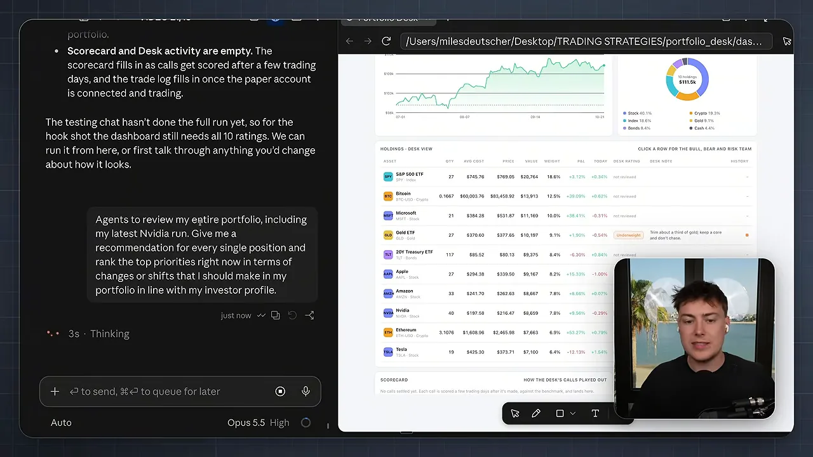
투자자 프로필이 기준이 돼요
투자자 프로필은 직접 쓰는 문서예요. 목표, 현금 흐름, 투자 스타일, 나이 같은 정보와 나만의 규칙을 담아요. 발표자가 든 규칙 예시는 이래요.
- 현금은 항상 10% 유지
- 금은 항상 20% 유지
- 위험을 더 감수하는 편이라 비트코인은 최소 10%
에이전트의 분석을 이 규칙과 견줘서 최종 판단을 내리는 구조예요.
매일 아침 자동으로 돌리기
발표자는 이어서 '매일 아침 7시에 실제 뉴스로 리서치를 돌려 포트폴리오 업데이트를 달라'고 시켜요. 그냥 대화 안에서 반복을 걸면 세션이 열려 있는 동안만 돌아요. 예약 작업으로 만들면 Claude 쪽 컴퓨팅에서 혼자 돌아요. 아래 화면이 그 예약 작업 목록이에요. 오른쪽 위 New task 메뉴에서 'Create with Claude'나 'Set up manually'를 골라요.
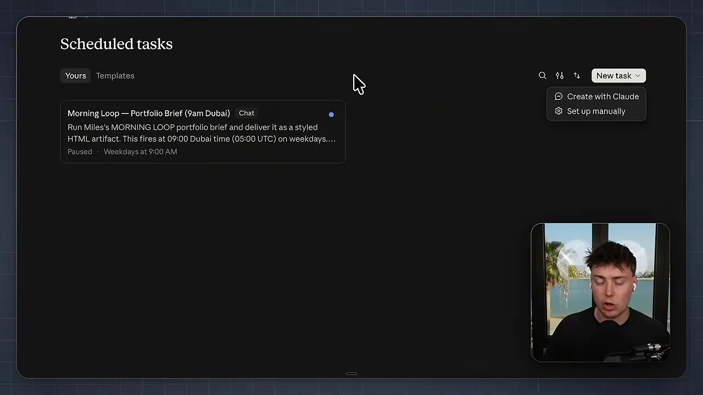
대화 안 예약은 컴퓨터가 켜져 있어야 해요. 발표자는 그래서 항상 켜진 개인 서버, 즉 VPS(Virtual Private Server)를 써요. 이유는 두 가지예요. 클라우드 예약 작업은 로컬 메모리 시스템에 접근하지 못하고, 재무 데이터는 자기 기기에 두는 게 마음 편하다는 거예요. 어디서 반복을 돌릴지만 정하면 설정 자체는 Claude가 쉽게 도와준다고 해요.
결과: 종목마다 등급이 붙었어요
검토가 끝난 대시보드예요. Desk Rating 열에 등급이, Desk Note 열에 한 줄 권고가 붙었어요. 애플은 Overweight에 '조금 더 사기', 아마존도 Overweight, 금 ETF와 테슬라는 Underweight예요.
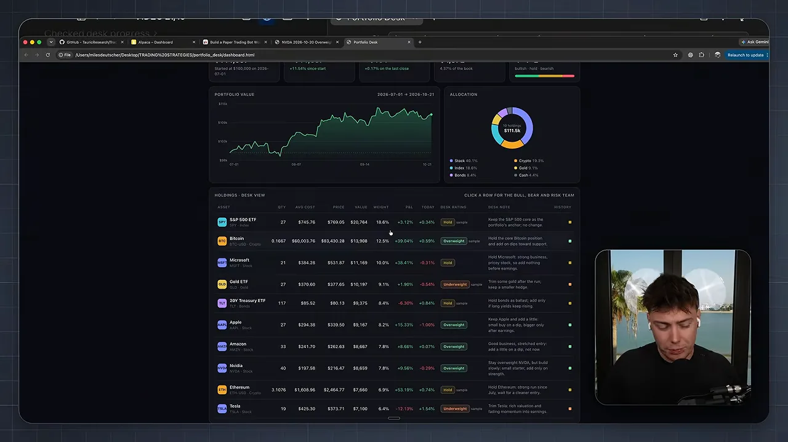
발표자는 이 조언만 보고 움직이지 말라고 다시 말해요. 의심하고, 스스로 생각하라는 거예요. 대신 이 도구의 진짜 가치를 이렇게 봐요. 포트폴리오 점검은 머리를 써야 하는 일이라 오랫동안 미루기 쉬운데, 그 고된 부분을 대신 해 준다는 점이에요.
Alpaca로 실제 주문까지
여기서 중요한 사실 하나가 있어요. TradingAgents는 증권사에 자동으로 연결되지 않아요. 보고서까지가 레포의 몫이고, 주문은 따로 붙여야 해요. 보고서를 읽고 Claude나 ChatGPT에 직접 주문을 시키거나, 그 과정을 스킬로 만들어 두는 식이에요.
flowchart LR
A["TradingAgents 분석"] --> B["HTML 보고서·등급"]
B --> C{"사람이 판단"}
C -->|"주문 지시"| D["Claude Code"]
D --> E["Alpaca API"]
E --> F["모의투자 계좌"]
주문까지 가려면 AI가 다루기 쉬운 증권사 계좌가 필요해요. 발표자가 가장 쉽다고 추천하는 곳은 Alpaca예요. 가짜 돈으로 연습하는 모의투자 계좌가 있고, 나중에 실계좌로 바꿀 수도 있어서예요. 돈을 잃지 않고 AI 매매 전략을 시험해 보기 좋은 방법이라고 해요.
암호화폐 거래소도 대안이에요. 요즘은 주식이나 금도 다루는 곳이 많지만, 아직 무기한 선물만 있는 경우가 많아요. 실물 자산을 현물로 다루는 거래소가 늘고 있어서 앞으로는 선택지가 넓어질 거라고 봐요. 지금 주식을 다루기엔 Alpaca가 시작하기 좋다는 결론이에요.
연결 순서
아래 화면 왼쪽이 Claude가 정리한 연결 안내예요. Step 1이 Alpaca 모의투자 계좌 만들기, Step 2가 API 키 발급, Step 3이 키를 .env 파일에 넣기예요. Step 2에는 키가 PK로 시작하면 모의투자용 키이고, 비밀 키는 한 번만 보여 주니 바로 복사하라는 주의가 있어요.
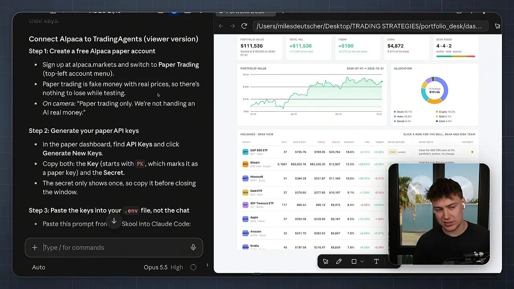
- Alpaca에서 모의투자 계좌를 만들어요 대시보드 위에 'You are on Paper Trading, no real money is being used' 안내가 떠요
- 대시보드에서 API 키를 발급받아요 — 키와 비밀 키 두 개를 복사해요.
- 키는 채팅창이 아니라
.env파일에 넣어요 — 실행 단계로 가면 Claude나 GPT가 이 파일을 달라고 해요. - 실제 주문 없이 시험 실행을 먼저 해요 — 문제가 없으면 그다음에 거래를 맡겨요.
아래가 Alpaca 모의투자 대시보드예요. 왼쪽 위에 Paper Trading 계좌 이름이, 위쪽 파란 띠에 실제 돈이 쓰이지 않는다는 안내가 있어요. 가운데 그래프는 하루 동안의 계좌 가치예요.
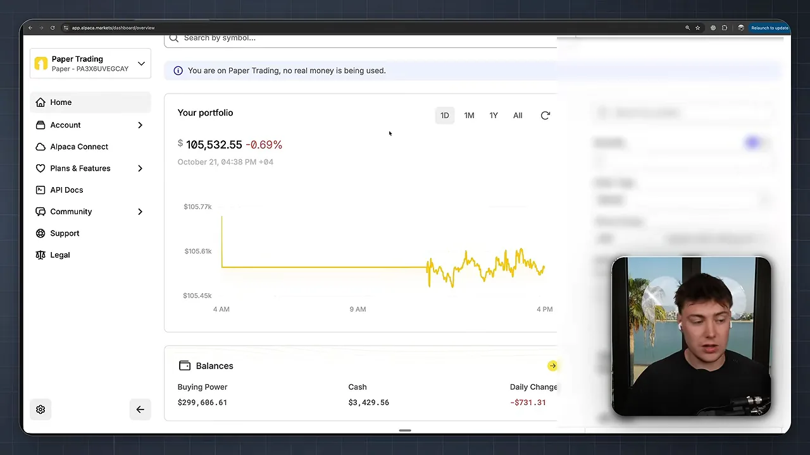
키를 어디에 둘지는 발표자가 강조하는 부분이에요. 모의계좌라면 채팅에 붙여도 진짜 돈은 아니니 큰일은 아니에요. 하지만 실계좌라면 키가 새지 않도록 반드시 .env 파일에 넣어야 해요. 아래 화면의 Step 3 지시문이 그걸 Claude에게 맡기는 방법이에요. '키를 채팅에 붙이라고 절대 하지 말라'는 문장이 들어 있어요.
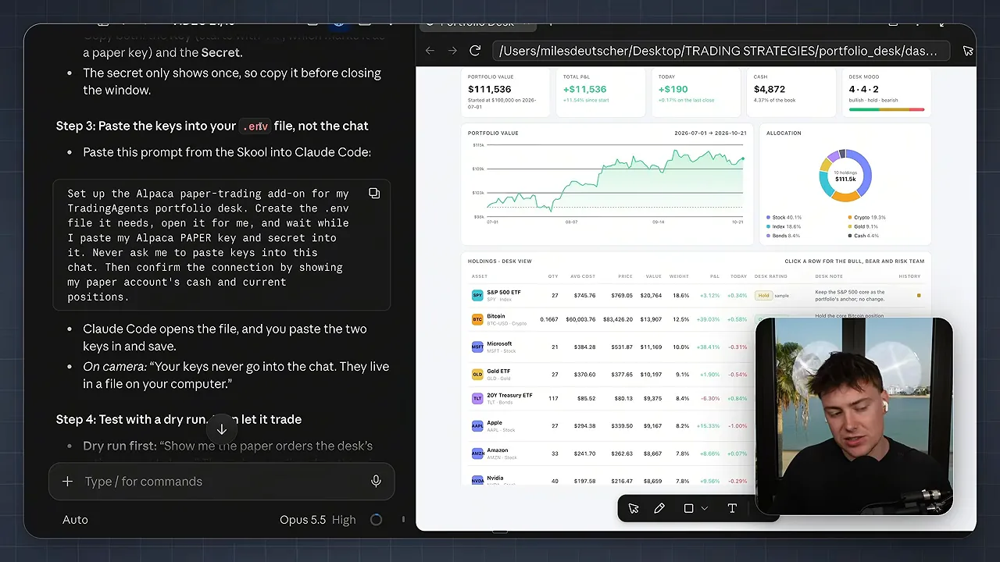
주문을 넣어 봐요
연결이 끝나면 말로 주문해요. 아래 화면 왼쪽 아래 말풍선이 발표자의 지시예요. 'TradingAgents가 엔비디아를 더 사라고 했으니, 지금 시장가로 1,000달러어치 더 사 줘. Alpaca 계좌에서 실행해 줘.' 그 위 문단에는 이 연동이 모의 키와 모의 계좌가 아니면 거부한다는 안전장치가 적혀 있어요.
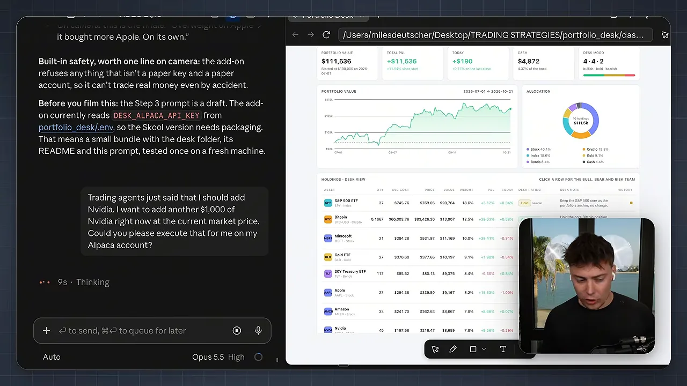
Claude는 바로 주문하지 않고 한 번 확인해요. 아래 화면 위쪽 박스를 보면, 연결된 계좌가 모의 계좌이고 미국 장이 약 50분 뒤에 열리니 지금 시장가 주문을 넣으면 시가에 체결된다고 설명한 뒤 주문할지 물어요. 발표자가 승인하자 'Using alpaca: place stock order'가 돌아가요.
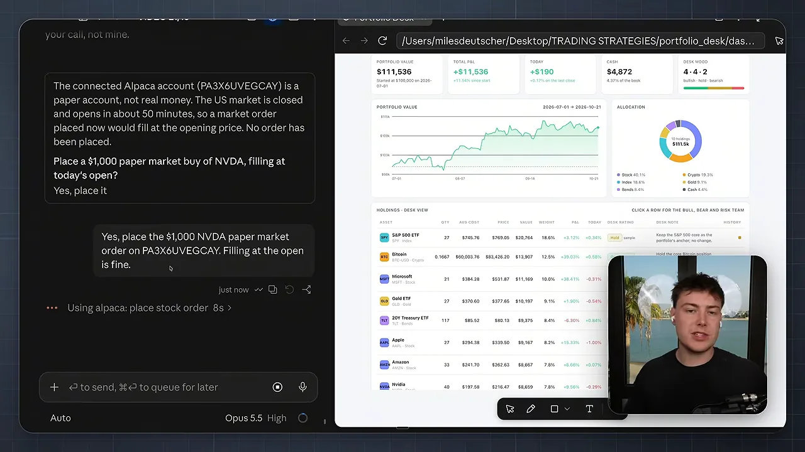
Alpaca 화면을 새로 고치면 Recent Orders 표 맨 위에 엔비디아 시장가 매수 주문이 생겨 있어요. 장이 열리기 전이라 체결 수량(Filled Qty)은 아직 0이에요. 발표자는 거의 즉시 들어간다고 말해요.
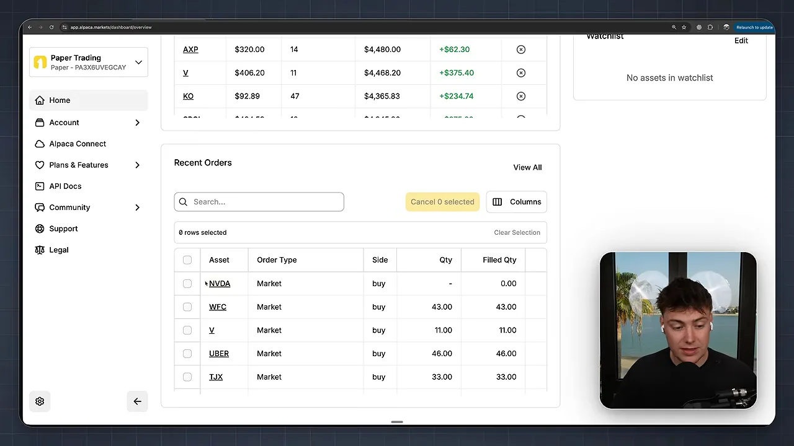
시장가 주문 말고도 지정가 주문이나 '이런 일이 생기면 5% 팔아 줘' 같은 조건부 주문도 말로 시킬 수 있어요. 이 과정을 스킬로 만들어 두면 매번 지시하지 않아도 돼요.
더 해 볼 만한 프롬프트
마지막으로 발표자는 지금까지 보여 준 것 말고도 자주 쓰는 활용법을 소개해요. 아래 화면은 Claude Code에 붙여 넣는 프롬프트 목록이에요. 대괄호 안의 [TICKER], [AMOUNT] 같은 칸만 내 값으로 바꾸면 돼요.
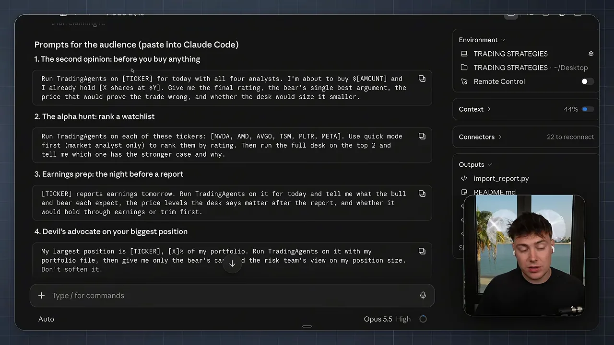
영상에서 말로 설명한 활용법을 정리하면 이래요.
| 활용법 | 무엇을 하나요 |
|---|---|
| 두 번째 의견 | 어차피 사려던 것(예: 비트코인 1만 달러어치)을 사기 전에 분석 시스템으로 검증해요. 자동매매는 아니지만 판단을 보강해 줘요 |
| 알파 찾기 | 관심 종목을 빠른 모드로 등급순으로 줄 세워요. 업종 전체를 넣거나, 나스닥 100에서 가장 비관적인 종목을 골라 빼는 데도 써요 |
| 실적 발표 준비 | 엔비디아·애플처럼 큰 실적 발표를 앞둔 종목에서 매매 기회를 미리 따져요 |
| 반대 의견 | 내 포트폴리오, 특히 가장 큰 포지션을 일부러 반대 입장에서 분석해요 |
| 쏠림 점검 | 투자자 프로필과 비교해 원치 않는 쪽에 노출이 쌓였는지 확인해요 |
| Claude 대 GPT | 같은 분석을 두 모델로 돌려 결과가 갈리는지 비교해요 |
알파 찾기에서 말하는 빠른 모드는 지금까지 본 전체 실행보다 훨씬 빨라요. 화면의 예문을 보면 시장 애널리스트 하나만 써서 순위를 매기고, 상위 두 종목만 전체 데스크로 다시 돌려요.
목록 뒷부분은 아래 화면과 같아요. 5번 쏠림 점검은 AI 반도체, 금리, 암호화폐처럼 사실상 같은 베팅을 몇 번이나 하고 있는지 묻는 프롬프트예요. 6번 업종 ETF 순위와 7번 백테스트는 화면에만 있고 말로는 따로 설명하지 않아요.
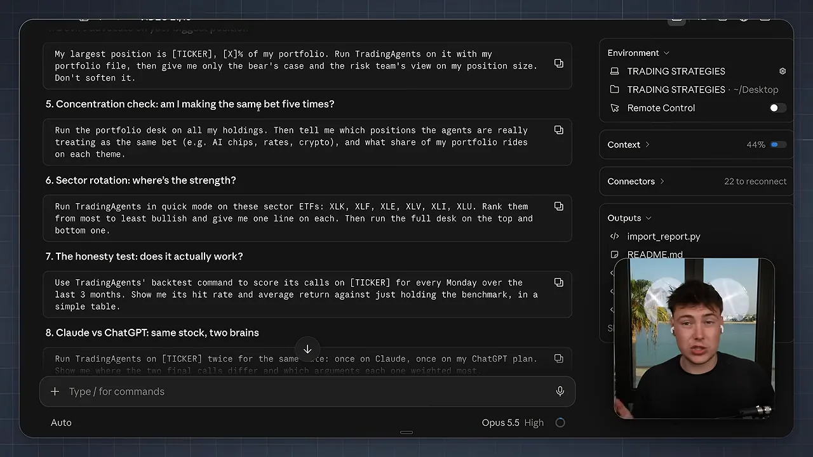
마지막 Claude 대 GPT 비교에 대해 발표자는 이렇게 설명해요. 전략과 논리의 틀은 같지만, 결국 추론은 모델마다 따로 해요. 그래서 한 모델로 원래 분석을 하고, 다른 모델로 검산하는 식으로 쓸 수 있어요.